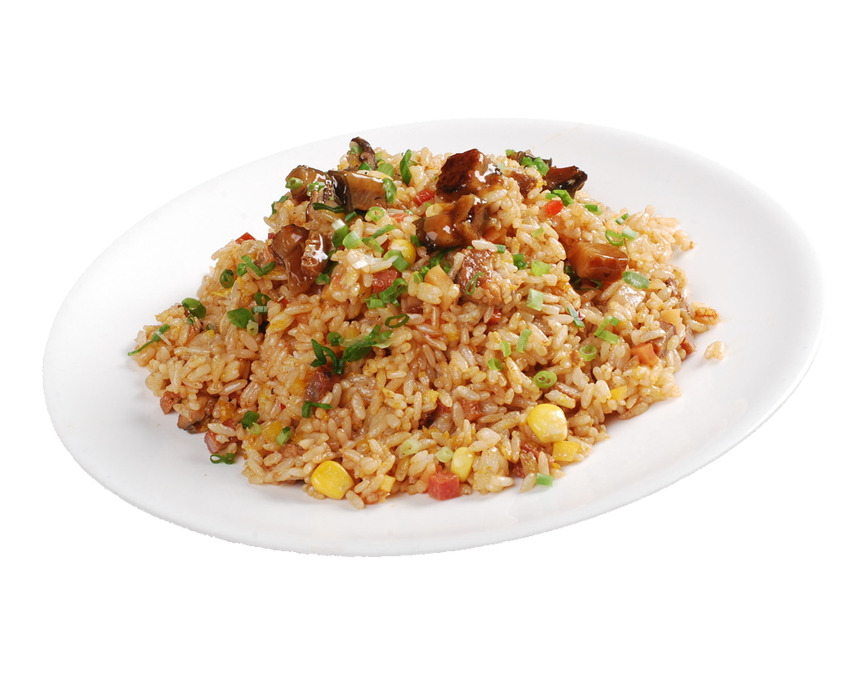

DapatkanResep
dengan Mudah

"Selamat datang di portal kami! Temukan beragam resep makanan dari hidangan klasik hingga inovatif, disertai petunjuk langkah demi langkah yang mudah diikuti. Dapatkan tips berguna, saran substitusi bahan, dan ide-ide kreatif untuk menciptakan hidangan yang unik dan lezat. Mulailah petualangan kuliner Anda hari ini dengan menjelajahi resep-resep favorit kami!"
Temukan ribuan resep makanan lezat dari seluruh dunia di Resepedia. Dengan panduan langkah demi
langkah, gambar, dan tips memasak, kami menyediakan segala yang Anda butuhkan untuk menciptakan
hidangan yang lezat. Mulai dari hidangan sarapan hingga makanan penutup, dan dari vegetarian hingga
bebas gluten, kami memiliki sesuatu untuk semua orang. Bergabunglah dengan komunitas kami dan mulai
petualangan memasak Anda hari ini!
Selamat memasak!